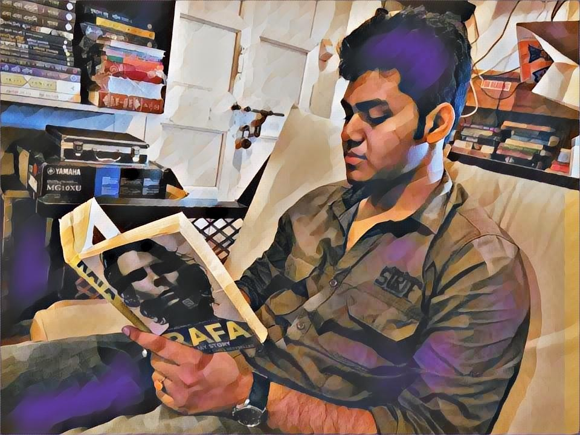

Portraiture of me holding the book-cover of Rafa: My Story at the cozy vibes of a cafeteria.
Once upon a time, Swayamjit was born in the city of Kolkata. With years passing by, he has acquired a taste of avid learning, thinking, coding, investigating on research matters, reading, clicking pictures, writing blogs and listening to a wide spectrum of music.
At present, he is a Bachelors student at Swami Vivekananda Institute of Science and Technology. He is working with Dr. Garga Chatterjee as a research assistant at the Ghilu : The Chatterjee Lab of Brain, Cognition & Society situated at Indian Statistical Institute, Kolkata. He has acquired almost two years of research experience. He has worked on pattern recognition from Jadavpur University, and human face detection techniques of Computer Vision from Calcutta University. He worked as an intern at Center for Soft Computing Research: A National Facility situated at Indian Statistical Institute, dealing with visual cryptograhic techniques on hiding information in image layers. He is working on Cognitive Science and image analysis at Ghilu Lab presently.
Feel free to reach out to him with queries relating to his work (or just say a 'hi'). You can download a copy of his CV here.
He likes to talk (a lot) and spends a lot of time doing so, oftentimes, on random topics completely unrelated to his research. He is self-critical about his shortcomings and feels correcting them will help him become a better person.
The pronunciation of his name in his native language, Bengali, is Swayam-jit (স্বয়ংজিৎ সাহা). It means one who can win by himself.
Bachelors in Computer Science and Engineering, Swami Vivekananda Institute of Science and Technology, Calcutta (2020)
Alumnus of Techno India Group Schools, Calcutta (2016)
Alumnus of South Point High School, Calcutta (2014)
Contribution by authors (first, second, and third) is denoted using the symbol * after their names.
Fair Heroes and Heroines, Dark Commoners-Colorism in Bangla Films
Swayamjit Saha*, Akash Roy Choudhury**, Garga Chatterjee***
Cambridge Open Engage by Cambridge University Press, 2020
Fair Heroes and Heroines, Dark Commoners-Colorism in Bangla Films
Swayamjit Saha*, Akash Roy Choudhury**, Garga Chatterjee***
Zenodo by the European OpenAIRE program and operated by CERN, 2020
Fair Heroes and Heroines, Dark Commoners-Colorism in Bangla Films
Swayamjit Saha*, Akash Roy Choudhury**, Garga Chatterjee***
SocArXiv by Center for Open Science, 2020
Research Intern, Center for Soft Computing Research: A National Facility (Winter 2019)
Had the priviledge to work with Dr. Kuntal Ghosh and his research team on building a novel visual cryptographic technique to ensure hiding of information in different layers of an image.Research Intern, Research Assistant (present), Psychology Research Unit (Summer 2019-present)
Working at Ghilu Lab on Cognitive science challenges with the help of Computer vision techniques. One of the projects that he involved was detection of colorism (colour based variation) in popular Bengali films of Tollywood industry, India.Intern, University of Calcutta (Summer 2018)
Using Backend (Python), implemented convolutional neural network model to detect human faces. At this stage, he admits he was a complete amateur in dealing with Computer vision problems. As a stepping stone, he referred here. He found code helpful to finish his assignment.
Intern, Jadavpur University (Summer 2018)
A kickstart to his research interest. He worked on a pattern matching problem to view the occurences of similar kind of inputs between two text files and finally calculate a score. The code can be found here.
Trainee, IC Design and Fabrication Centre, Jadavpur University (Summer 2018)
Working as a summer trainee at IC Design Lab of Jadavpur University was quite fun. Mask fabricaion of semiconductor devices, learning VLSI Design using EDA Tools and Design Verification Using VHDL and FPGA Implementation of Digital Systems. Click here to learn more about the training. A report of the training can be found here.
Non Resident Tutor, Preliminary subjects pertaining to secondary education (2017-2018)
Indian National-Level Contestent in Aptitude, National Talent Acquisition Test, 2019. (link).
Student Member, Computer Society of India, 2018-present (link).
PricewaterhouseCoopers Case Challenge Runner-up, 2018 (link).
Internshala Student Partner Campus Ambassador, 2018 (link).
GeeksforGeeks Campus Ambassador, 2018 (link).
Project work, University of Calcutta, 2018 (link).
Project Report, IC Design Lab Jadavpur University, 2018 (link).
Pattern matching project Github Upload, Jadavpur University, 2018 (link).
Effective time management technique pomodoro.